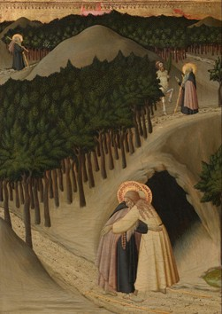

Soeur Wendy Beckett
PHONG CÁCH GOTHIC QUỐC TẾ
Cuối thế kỷ 14, phong cách gothic quốc tế ra đời từ sự kết hợp của
nghệ thuật Ý và nghệ thuật Bắc Âu. Ở thế kỷ sau, những cuộc trao đổi
giữa Ý và Pháp diễn ra nhiều, và các họa sĩ tài năng cùng đi lại
khắp châu Âu. Tư tưởng luân lưu và hòa trộn với nhau và chẳng bao
lâu sau phong cách mới đã được thể hiện ở Pháp, Ý, Anh, Đức, Áo và
Bohême.
Ảnh hưởng của Simone Martini đã lan tràn rất xa. Ông đã rời nước Ý
vào năm 1340 hoặc 1341 để làm việc cho triều đình của giáo hoàng
thời đó ở Avignon, nước Pháp. Ở đây người ta rất tán thưởng nét vẽ
tinh vi của ông. Thêm vào sự thanh lịch quý phái của phong cách
gothic quốc tế là sự chăm chút tới chi tiết hiện thực vay mượn của
người Flandre. Trái với các ngành nghệ thuật gothic nguyên thủy khác
nhau, phong cách này có đặc tính riêng.
Một thí dụ cổ điển và quốc tế thật sự là Bức tranh hai tấm của
Wilton, ngày nay nằm ở National Gallery, Luân đón. Tác phẩm có sự
tinh tế tuyệt mỹ này vẫn không biết tác giả là ai và rất khó định
niên đại. Có lẽ nó đã được vẽ vào một lúc nào đó dưới triều đại của
Richard II (1377-1399); các chuyên gia không thể nào đồng ý với nhau
về quốc tịch của bức tranh - Anh, Pháp, Flandre hay từ Bohême tới -
nên chứng tỏ rằng nó thuộc phong cách quốc tế. Nhan đề của bức tranh
được mượn từ ngôi nhà người ta tìm ra nó ở Anh.
Bức tranh hai tấm của Wilton mô tả Richard II của nước Anh quỳ trước
Đức Mẹ và Chúa Hài Đồng. Hai vị thánh người Anh di theo nhà vua,
Edmond (cầm một mũi tên) và Edouard linh mục nghe xưng tội (cầm một
chiếc nhẫn), nhân vật thứ ba là Jean Baptiste. Các thiên thần mỗi vị
đeo một món châu báu dưới hình thức một con hươu trắng, biểu tượng
của vua Richard. Có lẽ bức tranh có mục đích củng cố cơ sở thần
quyền (vương quyền siêu nhiên) của vua Richard, điều này có vẻ được
xác nhận bởi cử chỉ ban phép lành của Chúa Hài Đồng. Bức tranh cũng
viện dẫn tới lễ Epiphanie với ba vua chiêm bái Chúa Hài Đồng.
NHỮNG NGHỆ SĨ TRANG TRÍ SÁCH
Nghệ thuật trang trí sách cổ xưa vẫn còn là hình thức hội họa chính
yếu ở Pháp vào đầu thế kỷ 15. Nghệ thuật này đạt tới cực đỉnh với
tác phẩm của ba anh em Paul, Herman và Jean Limbourg, những đại diện
của phong cách gothic quốc tế. Ba anh em nguyên quán ở tỉnh Guilder,
Hà Lan, nhưng hoạt động ở Pháp. Cùng với Ambrogio Lorenzetti, họ là
những họa sĩ gothic duy nhất thể hiện một cách tỉ mỉ và có phương
pháp một thành thị với vùng phụ cận, dân cư và nhà cầm quyền. Cả ba
anh em mất năm 1416, có lẽ vì bệnh dịch.
Tuyệt tác của ba anh em là Những thời khắc rất phong phú của công
tước xứ Berry, thực hiện cho tông tước, một người bảo trợ văn học
nghệ thuật và sưu tập sách viết tay cuồng nhiệt. Quyển sách mà ba
anh em trang trí là một quyển sách kinh mà ở thế kỷ 15 người ta gọi
là "kinh giờ", đọc bảy lần trong ngày. Công tước Berry là em của vua
Charles V Le Sage (Pháp). Ông cho xây dựng nhiều lâu đài, trang trí
bằng những tác phẩm nghệ thuật đặt làm riêng: thảm, tranh và nữ
trang châu báu. Người ta đồn ông có tới 1500 con chó. Quyền "kinh
giờ" của ông, rủi thay, không hoàn tất do cái chết của nhà bảo trợ
và các nghệ sĩ.
Quyển kinh giờ có một quyền lịch. Mỗi tháng được tượng trưng bằng
một cảnh sinh hoạt chi tiết, thường là nói về hoạt động đặc thù của
mùa đó. Thí dụ, tháng tám, các cặp vợ chồng ăn mặc sang trọng, cưỡi
ngựa đi săn bằng chim ưng, tòa lâu đài lấp lánh ở đàng xa, các nông
dân khoái trá tấm dưới sông. Phần màu lam ở phía trên là một nửa bầu
trời với các dấu hiệu chiêm tinh học. Bức tiểu họa này, do sự cực kỳ
tinh tế và tính hiện thực của nó, minh họa hoàn hảo sự chính xác và
tính cách cầu kỳ của loại tranh này.
Bức Vườn Địa đàng được vẽ riêng và xen vào sách sau. Trong hình tròn
lớn là thế giới trước lúc Adam và Eva phạm tội. Toàn bộ câu chuyện
Thiên đàng đã mất và sự ngang bướng của con người diễn ra trước mắt
chúng ta. Adam và Eva bị đuổi ra khỏi chốn cực lạc, đứng trên những
mỏm đá cheo leo nguy hiểm. Sự chăm chút chi tiết kết hợp với ý thức
tự sự đặc biệt cao.
GENTILE DA FABRIANO
Họa sĩ Ý Gentile da Fabriano (khoảng 1370-1427), một lữ khách không
biết mệt mỏi, có ảnh hưởng rất lớn với thời đại của mình. Ông đã góp
sức truyền bá nghệ thuật gothic quốc tế trong phần lớn nước Ý, mà
ông là người đại diện không chối cãi được. Những bức tranh lớn của
ông cho thấy vô vàn chi tiết trong hình ảnh một thế giới hết sức
phong phú. Nghệ sĩ cho câu chuyện tính chất hiện thực vừa đủ để có
vẻ thuyết phục.
Phần lớn tác phẩm của Gentile làm ông nổi tiếng lúc sinh thời nay đã
mất. Trong số còn lại, bức Sự chiêm bái của ba vua là bức tranh gây
xúc động nhất. Số nhân vật có vẻ thật đông, choán hết bức tranh, thu
hút sự chú ý của chúng ta và tạo cảnh náo nhiệt, nhưng không vì vậy
mà làm loãng chủ đề của bức tranh. Ba vua đạo sĩ từ phương Đông tới
để chiêm bái Chúa Hài Đồng, mang theo cả triều đình huy hoàng, lạ
mắt: lạc đà, ngựa, chó, thị thần, hề lùn. Vậy mà thu hút sự chú ý là
hình ảnh nhỏ nhấn của Chúa Hài Đồng ngồi trên gối mẹ và nghiêng mình
để nhẹ nhàng đặt bàn tay lên đầu vị vua già quỳ trước mặt.
Như trong bức Truyền tin của Simone Martini, khung cảnh gothic, phức
tạp và huy hoàng, là bộ phận không thể tách rời của tác phẩm và bắt
buộc cấu trúc của tác phẩm phải theo. Bức Sự chiêm bái của ba vua do
Palla Strozzi là người giàu nhất Florence thời đó dặt vẽ cho nhà thờ
Santa Trinita. Sự quan tâm cho giai thoại có mặt trong tác phẩm
Gentile da Fabriano cũng thấy trong bức Trình diện ở Đền thờ. Sự
kiện thiêng liêng đó là yếu tố trung tâm của bức tranh, nhưng ở mỗi
bên bức tranh là những cảnh sinh hoạt thường ngày: hai người đàn bà
đang trò chuyện và những người hành khất đang xin ăn.
HỌA SĨ VÀ NGHỆ SĨ KHẮC HUY CHƯƠNG
Sự trong suốt của Gentile cũng thấy ở người đồng hương là Pisanello
(khoảng 1395-1455/56). Từ lâu người ta tin rằng hầu hết bích họa của
ông đã mất hết. Nhưng, may thay, nhiều bức vừa được tìm thấy ở
Mantoue thành phố ở Bắc Ý.
Bức Đức Mẹ đồng trinh với thánh Antoine và thánh Georges cho thấy
một sự tương phản kỳ lạ. Thánh Antoine, tu sĩ ẩn cư râu dài quá
ngực, mặc một cái áo hành hương thô kệch màu rỉ sét, tương phản với
hình ảnh lịch sự của thánh Georges ăn mặc sang trọng với chiếc mũ
trắng rộng vành và giày có đinh thúc ngựa vàng óng. (Thánh Georges
không có vầng hào quang, cái mũ thay vào đó).
Tuy vậy, bất chấp sự quyến rũ do hình ảnh hai vị thánh, hình ảnh của
Đức Mẹ và Chúa Hài Đồng vẫn có ấn tượng mạnh với chúng ta. Lơ lửng
trên không, xung quanh như có vầng dương bao bọc, hình ảnh này tạo
sự thống nhất và ý nghĩa cho hoạt cảnh.
Pisanello cũng nổi tiếng về huy chương ngang với tranh. Huy chương
của ông một mặt có chân dụng của nhà bảo trợ, mặt kia là một phúng
dụ hoặc phong cảnh.
TRẬN DỊCH ĐEN VÀ NGHỆ THUẬT
Năm 1347, trận dịch đen đã do những con đường thương mại từ Trung
hoa tràn vào và hoành hành khắp châu Âu. Các hạch trong người sưng
lên, dưa tới cái chết nhanh chóng và đau đớn. Cư dân một số thành
phố giảm mất 40 phần trăm và nhiều làng mạc biến mất hẳn. Trận dịch
đã hâm nóng lại nhiệt tâm tôn giáo và gây một ám ảnh về cái chết.
Trong một bức tiểu họa, thần chết sát hại không phân biệt hạng người
nào, giống hệt trận dịch đen.
Một số tác phẩm gothic cho thấy tác động của đại họa đã tàn sát gần
một phần ba dân số đó. Nhiều người coi đó là sự trừng phạt của Chúa
Trời dành cho con người hư hỏng và lòng sùng kính tôn giáo do cơn
dịch gây ra không vì chính tôn giáo mà vì những hành động quá dáng
như tự đánh roi vào mình, cho là để làm vững lòng. Những họa sĩ như
tác giả Quyển kinh giờ của Rohan diễn tả sự mê hoặc trước cái chết
và Giờ phán xét. Tinh thần hiện thực ghê gớm trong bức tiểu họa
trang trí Người chết trước Người phản xét cho thấy sự tương phản rõ
rệt với những bức tiểu họa của anh em Limbourg. Ở đây, người nghệ sĩ
vô danh cho thấy mình nghĩ về ý nghĩa và bộ mặt của cái chết không
tránh được tới mức độ nào. Bức tranh, với phép phối cảnh cổ điển và
không có độ sấu trong không gian, vì thế lại càng có ấn tượng mạnh.
Sự kinh khủng về một cái chết như vậy được nhấn mạnh bằng một tử thi
lấm tấm những mụn mủ và thối rữa nằm ở tiền cảnh, gần gũi đến nỗi
khiến người xem lạnh lùng nhất cũng cảm thấy sợ hãi.
Lời cầu nguyện cuối cùng của người chết được viết bằng tiếng La tinh
trên một dải băng trắng: "Xin đặt linh hồn con vào tay Người, hỡi
Chúa cứu thế, Chúa của con, Chúa của sự thật". Chúa cầm một quả cầu
và một thanh gươm, những biểu tượng uy quyền của Người với tư cách
là Người Phán xét. Đáp lại lời cầu nguyện của người chết, Người nói
những lời sau đây (bằng tiếng Pháp): "Mày sẽ bị trừng phạt vì tội
lỗi của mày. Mày sẽ gặp ta ở dây vào ngày Phán xét".
Những hình diện nhỏ phía trên bên trái thể hiện thánh Michael có một
đạo quân thiên thần giúp đỡ dạng tấn công một con quỷ đang tìm cách
bắt linh hồn của một người chết, tượng trưng bằng một thiếu niên
trần truồng.
SIENNE, THÀNH PHỐ THANH BÌNH
Những tác phẩm gothic quốc tế khác có vẻ như không bị ảnh hưởng
khủng khiếp của trận dịch đen. Thật vậy, trong thời kỳ náo động đó,
người ta thấy ở nhiều họa sĩ một sự thanh thản tâm hồn vô cùng đau
xót. Người ta cũng có thể thấy ở họ một cái gì thần tiên, như họa sĩ
Stefano di Giovani tức Sassetta (1392-1450). Bức tranh trên gỗ: Gặp
gỡ giữa thánh Antoine và thánh Paul của ông (hình 6) cho thấy ảnh
hưởng của sách trang trí Pháp. Hai nhà ẩn tu gặp nhau trong một khu
rừng, ôm nhau một cách tự nhiên như hai đứa trẻ khẳng định sức mạnh
của tình yêu.

Stefano Sassetta, Cuộc gặp gỡ của Saint Anthony and Saint Paul
(The meeting of Saint Anthony and Saint Paul), khoảng năm 1430 -
1435, 30,5 x 42,5 cm
Bức tranh là một phần của một loạt tranh nhan đề Cuộc đời của Thánh
Antoine, một trong những nhà sáng lập cuộc sống trong tu viện. Ở
phía trên, chúng ta thấy thánh Antoine đã 90 tuổi bỏ cuộc sống ẩn tu
sau môt thiên cảm, đi tìm thăm thánh Paul ẩn tu, lúc đó đã 113 tuổi.
Trên đường đi, người gặp một nhân mã, tượng trưng đa thần giáo.
Thánh Antoine ban phép lành và cải hóa y theo cơ đốc giáo.
Tiền cảnh cho thấy kết cục của câu chuyện, hai vị thánh ôm nhau, hai
cây gậy nằm dưới đất, cây gậy của thánh Antoine luôn luôn có dạng
một cây nạng.
Trong lúc sanh tiền của Sassetta, Sienne sống trong thanh bình dưới
chính thể cộng hòa (trừ một giai đoạn ngắn vào năm 1430), điều đó
cho phép thành phố thắt chặt những quan hệ có lợi với đối thủ của
mình là thành phố Florence lớn hơn và hùng mạnh hơn. Sasetta là họa
sĩ Sienne quan trọng nhất của thế kỷ 15. Nghệ thuật của ông được
nuôi dưỡng bằng truyền thống gothic ở Sienne, may thay cũng chịu ảnh
hưởng của những nghệ sĩ cách tân tài năng của Florence thời đó, như
Masaccio và nhà điêu khắc Donatello.